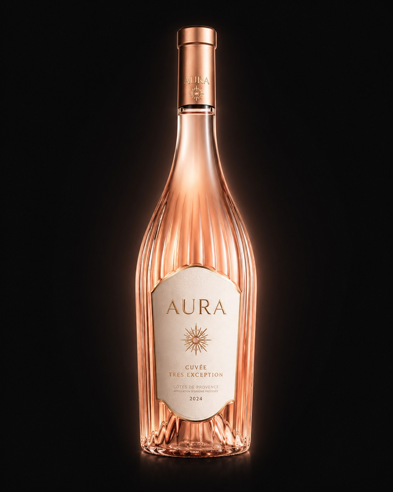

AURA TRÈS
The house's rarest piece. A confidential production, reserved for tables and collections that know how to wait.
Time, as the only ingredient.
Selection
Only the estate's oldest vines, with naturally low yields, are chosen for AURA TRÈS — a handful of rows, identified year after year.
Ageing
From twelve to twenty-four months depending on the vintage, in barrels and foudres, in the estate's vaulted cellar — with no calendar set in advance.
Blending
Decided by taste, never on paper. Some years, an entire vat is set aside rather than blended out of turn.
Choose your light.
AURA TRÈS — Red
Game, braised meats, aged cheeses.
€79 — 75clAURA TRÈS — White
Shellfish, fine fish, iodine-forward cuisine.
€79 — 75clAURA TRÈS — Rosé
Grilled sea bass, Mediterranean cuisine, a distinguished apéritif.
€79 — 75cl


An allocation, not an order.
Given the limited production, AURA TRÈS is not sold on the open market. Each request is reviewed, and an annual allocation is offered to houses and collectors who apply.
The process is simple: a request by e-mail, a conversation with the house to understand your intended use — a starred restaurant, a private cellar, a specific occasion — then an allocation proposal, based on the volumes available for the current vintage.
Make a Request